Introduction to sliced¶
Joshua Loyal, January 2018
In [1]:
%matplotlib inline
import numpy as np
import matplotlib.pyplot as plt
import matplotlib as mpl
from mpl_toolkits.mplot3d import Axes3D
from plotting_utils import label_line, label_component
from plotting_utils import abline, label_abline
from plotting_utils import Arrow3D
mpl.rcParams['figure.figsize'] = (10, 8)
sliced is a library for sufficient dimension reduction (SDR) using
inverse moment methods. This is not a common technique, but can be a
powerful tool in the right situation. This document is designed to
introduce the concept of SDR to those familiary with other more common
unsupervised dimension reduction techniques like Principal Component
Analysis (PCA). When following along it will be helpful to keep
Principal Component Analysis (PCA) in mind. While PCA is not an SDR
technique, it serves the same purpose: to reduce the number of features
in a dataset.
We’ll start with a brief introduction to sufficient dimension reduction.
This section elaborates on the purpose of SDR as well as in what
situations it should be used. Following this introduction is a
comparison of PCA with Sliced Inverse Regression (SIR). SIR is an
inverse moment method that results in sufficient dimension reduction.
The implementation of which is found in the sliced package.
What is Sufficient Dimension Reduction?¶
Let’s say we have some data, and we want to predict some feature,
 , using a collection of other features,
, using a collection of other features,  . In
other words, we want to gain some insight about the conditional
distribution 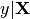. However, when the number of features
is high, it is common to remove irrelavent features before moving onto
the prediction step. This removal of features is what is meant by
dimension reduction. We are reducing the number of columns (aka
dimensions) in our dataset.
. In
other words, we want to gain some insight about the conditional
distribution 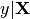. However, when the number of features
is high, it is common to remove irrelavent features before moving onto
the prediction step. This removal of features is what is meant by
dimension reduction. We are reducing the number of columns (aka
dimensions) in our dataset.
Those familiar with dimension reduction may be thinking: “I’ll use PCA
or t-SNE for this!”. While these techniques are great, they fall
under the category of unsupervised dimension reduction. Notice that
the unsupervised setup is very different than the situation described
above. In unsupervised learning we are only concerned with the
distribution of itself. No y involved. For example,
PCA would reduce the number of features by identifying a small set of
directions that explains the greatest variation in the data. This set of
directions is known as a subspace. However, there is no reason to
believe that this subspace contains any information about the
relationship between and . Information about
could be orthogonal to this space. This is because PCA did not
use information about when determining the directions of
variation.
In order to avoid the situation above, sufficient dimension
reduction is all about keeping the relationship between
and in mind. The goal is to find a small
set of directions that can replace without loss of
information on the conditional distribution . This
special subspace is called the central subspace, and is labeled with
the symbol 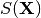. In other words, if we restrict out
attention to this smaller subspace, , we would find
that the conditional distribution 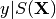 is the same as
the distribution . But we now have a much smaller
set of features! This would allow us to better visualize our data and
possibly gain deeper insights.
Example: Surfaces in 3D¶
Let’s focus on a concrete example: A surface in three-dimensions. In
this case, we have two features  and 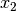 that live on
a plane in 2-dimensions. In addition, each pair of points,
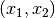, is associated with the height of the surface,
, that lies above it. In this example, we will focus on a
parabolic surface: 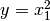. In terms of features and targets,
we have a dataset of two features, (, ), and the
target is the height of the surface, .
and 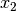 that live on
a plane in 2-dimensions. In addition, each pair of points,
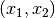, is associated with the height of the surface,
, that lies above it. In this example, we will focus on a
parabolic surface: 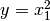. In terms of features and targets,
we have a dataset of two features, (, ), and the
target is the height of the surface, .
What are the possible subspaces associated with this dataset? They are subspaces of the 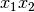-plane. This is a plane in two-dimensions. The subspaces of this plane correspond to all one-dimensional lines in the plane. A few examples are displayed below:
In [2]:
# plot lines in the plane
ablines = [([-5, -5], [5, 5]),
([-5, 0], [5, 0]),
([0, -5], [0, 5]),
([-5, 5], [5, -5])]
for a_coords, b_coords in ablines:
abline(a_coords, b_coords, ls='--', c='k', lw=2)
# labels
label_abline([-5, 5], [5, -5], '$\hat{\\beta}$ = (1, -1)', -2, 1.5)
label_abline([-5, -5], [5, 5], '$\hat{\\beta}$ = (1, 1)', 1.5, 1.7)
label_abline([-5, 0], [5, 0], ' $x_1$-axis: $\hat{\\beta}$ = (1, 0)', -3, 0.2)
label_abline([0, 5], [0, -5], '$x_2$-axis: $\hat{\\beta}$ = (0, 1)', 0.3, 2)
plt.xlabel('$x_1$')
plt.ylabel('$x_2$')
plt.xlim(-5, 5)
plt.ylim(-5, 5);
The goal of sufficient dimension reduction is to identify the line that
contains all the information about . In this example that would
be the -axis, since is a function of only
. By dropping from our analysis we would not lose
any information about , since does not depend on
.
Now you may have notices that each subspace is labeled with a vector
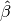. This vector tells us the direction of the line.
More importantly, can be used to project any point
in the plane onto that line. We just take the dot product. For example
to project a point onto the -axis we let
 , so that
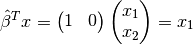.
It is this that is of central importance in
sufficient dimension reduction algorithms. If we can estimate
, then we can create a lower dimensional dataset by
using 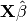 in our analysis instead of
.
, so that
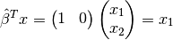.
It is this that is of central importance in
sufficient dimension reduction algorithms. If we can estimate
, then we can create a lower dimensional dataset by
using 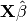 in our analysis instead of
.
Now, let’s take a look at the surface to see how this
sort of dimension reduction can help us visualize a dataset. A 3d plot
of the surface in the -- plane is shown
below.
In [3]:
# generate data y = X_1 ** 2 + 0 * X_2
def f(x, y):
return x ** 2
x1 = np.linspace(0, 6, 30)
x2 = np.linspace(0, 6, 30)
X1, X2 = np.meshgrid(x1, x2)
Y = f(X1, X2)
# plot 3d surface y = x_1 ** 2
ax = plt.axes(projection='3d')
ax.plot_surface(X1, X2, Y, rstride=1, cstride=1,
cmap='viridis', edgecolor='none')
# An arrow indicating the central subspace
arrow = Arrow3D([0, 6], [3, 3],
[0, 0], mutation_scale=20,
lw=3, arrowstyle="-|>", color="k")
ax.add_artist(arrow)
ax.text(4, 3.5, 0, "$\hat{\\beta} = (1, 0)$", (1, 0, 0),
color='k', fontsize=12)
# rotate and label our axes
ax.view_init(35, -75)
ax.set_title('$y = x_1^2$');
ax.set_xlabel('$x_1$')
ax.set_ylabel('$x_2$')
ax.set_zlabel('y');
Notice how the surface only varies along the -axis. It is
completly flat as one traverses along the dimension. This is
what we mean when we say carrying no information about
. does not change along this direction. In addition,
the direction associated with the -axis,
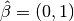, is labeled with an arrow. Notice that if
we align our view with the arrow, then we’d be
looking at a two-dimensional plot instead of a three dimensional plot.
This is shown below:
In [4]:
ax = plt.axes(projection='3d')
ax.view_init(0, -90)
ax.plot_surface(X1, X2, Y, rstride=1, cstride=1,
cmap='viridis', edgecolor='none')
a = Arrow3D([0, 6], [3, 3],
[0, 0], mutation_scale=20,
lw=3, arrowstyle="-|>", color="k")
ax.add_artist(a)
ax.text(4, 3.5, 2, "$\hat{\\beta} = (1, 0)$", (1, 0, 0), color='k', fontsize=12)
ax.set_title('$y = x_1^2$');
ax.set_xlabel('$x_1$')
ax.set_ylabel('$x_2$')
ax.set_zlabel('y');
So by looking at how varies along the
-directions we’ve gone from viewing a
three-dimensional plot to a two-dimension plot. In other words, we have
reduced the number of features from two to one, but the functional form
is still clear. This reduction of features is
sufficient!
Sliced Inverse Regression vs. PCA¶
Now that we know what sufficient dimension reduction is trying to
accomplish, we can look at how it is useful in the analysis of a
dataset. In addition, this example is designed to highlight the
differences between unsupervised and sufficient dimension reduction.
We will compare the subspace identified by SlicedInverseRegression
(SIR) in the sliced package with sklearn’s PCA. SIR is based
on sufficient dimension reduction, while PCA is not.
Consider the following data generating process:
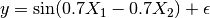

The dataset has two uncorrelated features,  and
and  ,
generated from a normal distribution. The target is the result of
applying a sine function to a linear combination of and
. There is also independent gaussian noise,
,
generated from a normal distribution. The target is the result of
applying a sine function to a linear combination of and
. There is also independent gaussian noise,  ,
applied on top of the sinusoidal signal.
,
applied on top of the sinusoidal signal.
Below is a scatterplot of vs. . The points are
colored according to . Brighter colors correspond to larger
values of the target. In addition, the central subspace is labeled with
a dashed line.
In [5]:
np.random.seed(123)
n_samples = 500
X = np.random.randn(n_samples, 2)
y = np.sin(0.7 * X[:, 0] - 0.7 * X[:, 1]) + 0.1 * np.random.randn(n_samples)
# label the central subspace
line, = plt.plot([-5, 5], [5, -5], ls='--', c='k', alpha=0.5)
label_line(line, 'central subspace', -3, 2)
# scatter plot of points
plt.scatter(X[:, 0], X[:, 1], c=y, cmap='viridis', edgecolors='k', s=80)
plt.xlim(-5, 5)
plt.ylim(-5, 5);
Now for whatever reason we want to reduce the number of features in this
dataset from two to one. Maybe to better visualize the behavior of
. Or maybe because we can only use one feature to build our
predictive model. Regardless we decide to compare the one dimensional
feature found by SIR with the first principal component of PCA.
Let’s take a step back and think about how we would remove features if
we knew how the data was generated. If we knew the data generating
process above, then we could recognize that the mean of is
completely determined by a single feature:
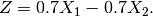
If  , then 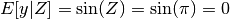. The
conditional expectation is a function of a single variable,
, then 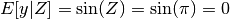. The
conditional expectation is a function of a single variable,  ,
instead of the two variables and . Therefore, we
should use in our analysis instead of and
. This would reduced the dimension of our dataset from two to
one without losing any information about .
,
instead of the two variables and . Therefore, we
should use in our analysis instead of and
. This would reduced the dimension of our dataset from two to
one without losing any information about .
Of course, sufficient dimension reduction is thinking in terms of
subspaces not derived features. So what subspace is associated with the
variable ? In terms of directions, we see that is
associated with the vector 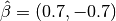. This is
because we can calculate by carrying out the product:
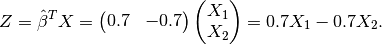
Thus we should focus our attention on the one dimensional subspace 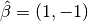 instead of the two dimensional plane.
Of course we do not know that exists, so we set out
to use SIR and PCA to estimate it from the data. To fit SIR we import
the algorithm from sliced library:
In [6]:
from sliced import SlicedInverseRegression
Then we create a SIR object. In addition, we tell the algorithm that we
are only looking for a single direction. This hyperparameter is denoted
by n_directions.
In [7]:
sir = SlicedInverseRegression(n_directions=1)
Finally we fit the object to the data as well as the target,
. This is the difference between PCA and SIR. SIR is aware of
the target, and will use that information to determine an appropriate
subspace. Notice that the fit method returns the object itself, so we
can use it for chaining if we desire.
In [8]:
sir.fit(X, y)
Out[8]:
SlicedInverseRegression(alpha=None, copy=True, n_directions=1, n_slices=10)
At this point we’re done! We succesfully fit SIR. Compare that process with fitting PCA to extract a single principal component:
In [9]:
from sklearn.decomposition import PCA
pca = PCA(n_components=1).fit(X)
Both estimators are almost interchangable. The only difference is SIR is
aware of the target. Of course, the goal was to extract the directions
of our reduced feature space. Just like PCA, SIR stores this result in
the components_ attribute.
In [10]:
pca_direction = pca.components_[0, :]
sir_direction = sir.directions_[0, :]
With our models fit, let’s compare the directions found by PCA and SIR:
In [11]:
# label the central subspace
line, = plt.plot([-5, 5], [5, -5], ls='--', c='k', alpha=0.5)
label_line(line, 'central subspace', -3, 2)
# scatter plot of points
plt.scatter(X[:, 0], X[:, 1], c=y, cmap='viridis', alpha=0.2, edgecolors='k', s=80)
plt.xlim(-5, 5)
plt.ylim(-5, 5)
# label subspaces found by PCA and SIR
arrow_aes = dict(head_width=0.2,
head_length=0.2,
width=0.08,
ec='k')
plt.arrow(0, 0, pca_direction[0], pca_direction[1], fc='darkorange', **arrow_aes)
label_component(pca_direction, 'PCA', -0.7, -0.2, color='darkorange')
plt.arrow(0, 0, sir_direction[0], sir_direction[1], fc='deepskyblue', **arrow_aes)
label_component(sir_direction, 'SIR', 0.5, -0.5, color='deepskyblue');
The orange arrow corresponds to the subspace found by PCA, while the
blue arrow corresponds to the subspace found by SIR. Notice how the
direction found by PCA has nothing to do with . If it did, then
it would point along the color gradient. Instead PCA picks the direction
that happens to have the most spread in the data cloud. In fact, this
direction is meaningless since the data was generated from an isotropic
gaussian blob. However, SIR knows about . Therefore it orients
itself nicely along the color gradient, which contains all the
information about the target.
To see how this helps visualization, we can project the dataset into the
SIR and PCA subspace by using the transform method:
In [12]:
# project data into the subspaces identified by SIR and PCA
X_sir = sir.transform(X)
X_pca = pca.transform(X)
f, (ax1, ax2) = plt.subplots(1, 2, sharey=True, figsize=(15, 8))
ax1.scatter(X_sir[:, 0], y, c=y, cmap='viridis', edgecolors='k', s=80)
ax1.set_title('SIR Subspace')
ax2.scatter(X_pca[:, 0], y, c=y, cmap='viridis', edgecolors='k', s=80)
ax2.set_title('PCA Subspace');
These plots display the power of the SIR algorithm. The sinusoidal pattern that links the features with the target is clearly visiable in the SIR plot on the left. However, this pattern is almost washed out in the PCA plot on the right with data spread almost uniformaly about the scatter plot.
In [13]:
def normalize_it(vec):
vec = vec.astype(np.float64)
vec /= np.linalg.norm(vec)
return vec
def replicate_angle(n_samples=500, n_iter=2500):
# direction of dimension reducing subspace
true_direction = normalize_it(np.array([1, -1]))
pca_angle = np.empty(n_iter, dtype=np.float64)
sir_angle = np.empty(n_iter, dtype=np.float64)
for i in range(n_iter):
np.random.seed(i)
X = np.random.randn(n_samples, 2)
y = np.sin(0.7 * X[:, 0] - 0.7 * X[:, 1]) + 0.1 * np.random.randn(n_samples)
sir = SlicedInverseRegression(n_directions=1).fit(X, y)
sir_direction = normalize_it(sir.directions_[0, :])
pca = PCA(n_components=1).fit(X)
pca_direction = normalize_it(pca.components_[0, :])
cos_angle = np.dot(pca_direction, true_direction)
pca_angle[i] = np.arccos(cos_angle)
cos_angle = np.dot(sir_direction, true_direction)
sir_angle[i] = np.arccos(cos_angle)
return pca_angle, sir_angle
pca_angle, sir_angle = replicate_angle()
fig, (ax1, ax2) = plt.subplots(1, 2, sharex=True, figsize=(15, 8))
ax1.hist(pca_angle, color="steelblue", edgecolor="white", linewidth=2, bins=20)
ax1.set_title('PCA')
ax1.set_xlabel('Angle between $\hat{\\beta}_{true}$ and $\hat{\\beta}_{pca}$')
ax1.set_ylabel('Counts')
ax2.hist(sir_angle, color="steelblue", edgecolor="white", linewidth=2, bins=20)
ax2.set_title('SIR')
ax2.set_xlabel('Angle between $\hat{\\beta}_{true}$ and $\hat{\\beta}_{sir}$')
ax2.set_ylabel('Counts')
Out[13]:
Text(0,0.5,'Counts')